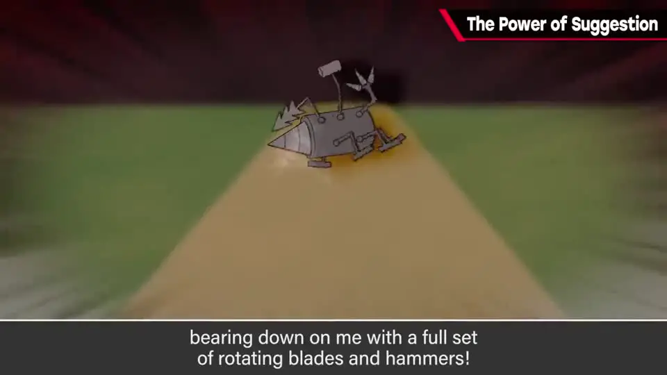
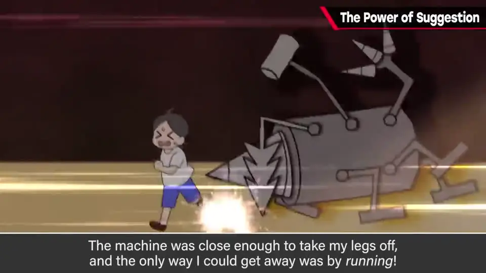
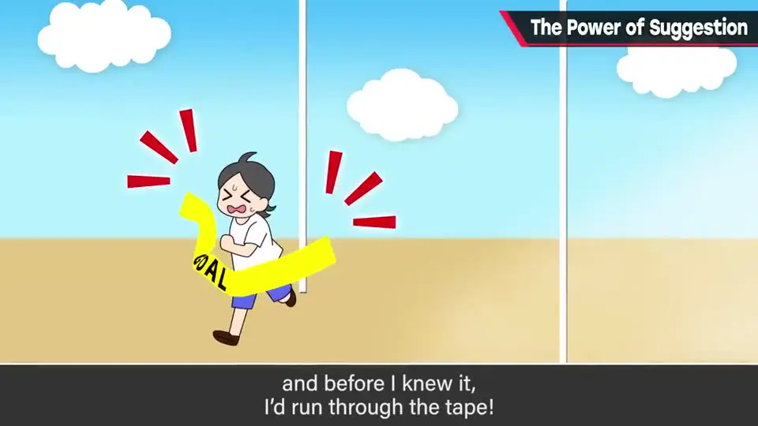
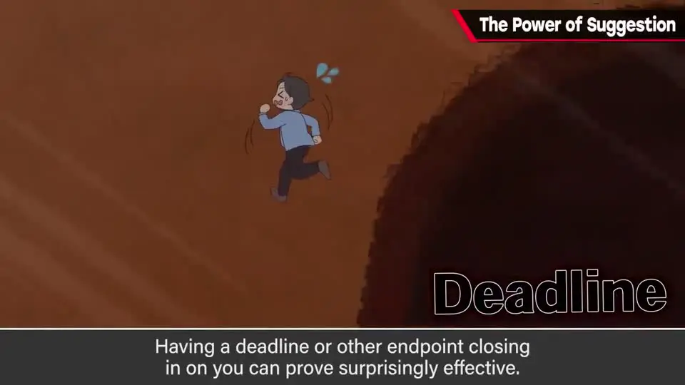
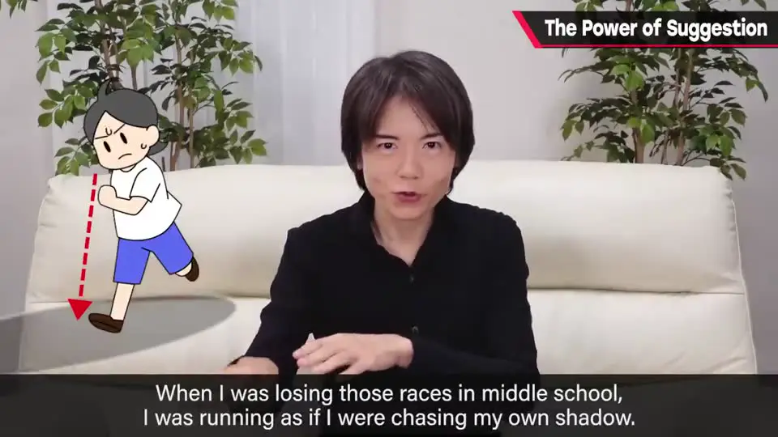

速览
中学时赛跑总是倒数第一的樱井，有一次突然拿了第一。方法是暗示：站上起跑线时，想象一个极其可怕的东西从背后高速追来——他想的是一台 3 米多高、满载碾碎用的齿和旋转装置的重型机械，轰隆隆地扑过来；起跑后拼命逃，近到脚快被削掉，结果冲过了终点线。听起来很傻，但暗示的力量不容小看。心态很重要，但与其设定一个要「奔向」的目标，不如想象有东西在逼近、必须全力逃离——比如截止日期或终点。做工作时，「还剩几个小时必须结束」比「随时结束都行」更能真正做完（但也不是说暑假作业拖到最后一天）。效果因人因情况而异，可能只是闲谈，但「逃离」的暗示也许比「奔向」更有效。
1. 赛跑倒数第一，突然拿了第一 0:03
中学时，樱井在赛跑中总是倒数第一，却有一次突然拿了第一名。他说这也许能成为竞争中的必胜法：
- 站上起跑线，摆好姿势。
- 这时给自己暗示：一个极其可怕的东西正从背后高速追来。樱井想象的是一台高 3 米以上的重型机械，满载着用于碾碎的齿和旋转装置，地动山摇地扑过来。
- 起跑信号一响，就拼命从它身边逃开——它近到脚好像随时会被削掉。
- 抱着这种暗示拼死奔跑，回过神来已经冲过了终点线。
结论：逃跑的脚步很快。



2. 「逃离」的暗示比「奔向」更有效 1:05
很傻吗？樱井自己也这么觉得。但暗示的力量不容小看。
- 做什么事，心态都很重要。
- 但比起单纯设定一个要奔向的目标，想象有东西在逼近、必须全力逃离——比如截止日期或终点——相当有效。
- 做工作时，与其想「随时收尾都可以」，不如定下「还剩几个小时必须结束」，实际上更能做完。
- （倒也不是说暑假作业就该拖到最后一天。）

flowchart LR
A["奔向目标
（同方向的暗示）"] -.->|"效果一般"| G["终点 / 完成"] B["背后有追兵：截止日期
（逃离的暗示）"] ==>|"全力逃跑，往往更有效"| G
（同方向的暗示）"] -.->|"效果一般"| G["终点 / 完成"] B["背后有追兵：截止日期
（逃离的暗示）"] ==>|"全力逃跑，往往更有效"| G
3. 当年为什么是倒数第一 1:49

樱井中学赛跑倒数第一时，是像追着自己的影子一样在跑——「那可不行，不行不行」。
暗示意外地有效，但效果因人因情况差别很大，所以可能半是闲谈。不过，比起「朝某处前进、瞄准目标」这种同方向的暗示，「从某物逃开」的暗示也许更有效。
自测题
1. 中学时赛跑总是倒数第一的樱井，是怎么突然拿到第一的？
在起跑线上给自己暗示：一个可怕的东西（3 米多高、满载碾碎用的齿和旋转装置的重型机械）从背后高速追来；起跑后拼命逃，结果冲过了终点线。 0:18
2. 樱井认为哪种暗示更有效？在工作中如何应用？
与其设定一个要奔向的目标，不如想象有东西逼近、必须全力逃离，比如截止日期或终点。做工作时，「还剩几个小时必须结束」比「随时结束都行」更能真正做完。 1:17
3. 他当年总是倒数第一时，是怎么跑的？
像在追自己的影子一样跑——他说那样不行。 1:49